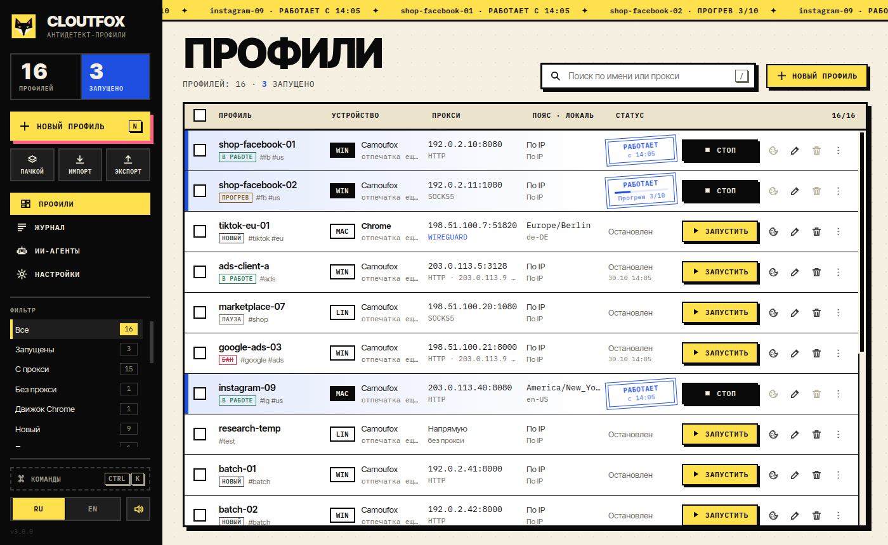

Camoufox подменяет отпечаток внутри движка Firefox. Профиль всегда выглядит как одно и то же устройство. Есть экспериментальный движок Chrome.
Антидетект-
профили
с открытым кодом
Менеджер профилей на Camoufox: у каждого свой отпечаток, куки, прокси и часовой пояс. Без подписки и облака, данные остаются на вашем компьютере.
MIT
Linux · Windows
MCP · REST API

Бесплатно
Для людей и ИИ-агентов